Robotics, reinforcement learning, humanoid control, and hands-on mechanical design — from simulation to hardware.
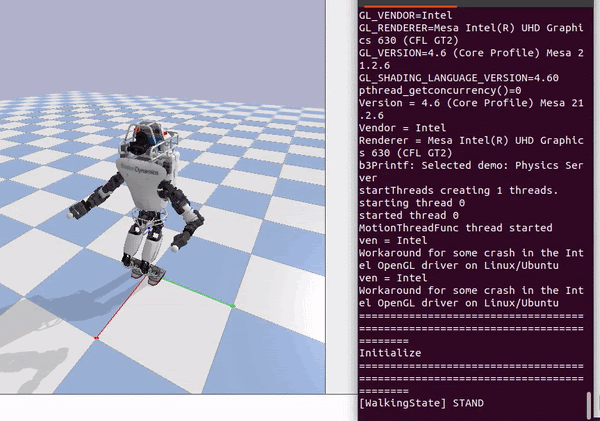
Reinforcement learning for robotic arm manipulation in NVIDIA Isaac Lab.
Stage 1: Initial (untrained)
Stage 2: Mid-training
Stage 3: Fully trained
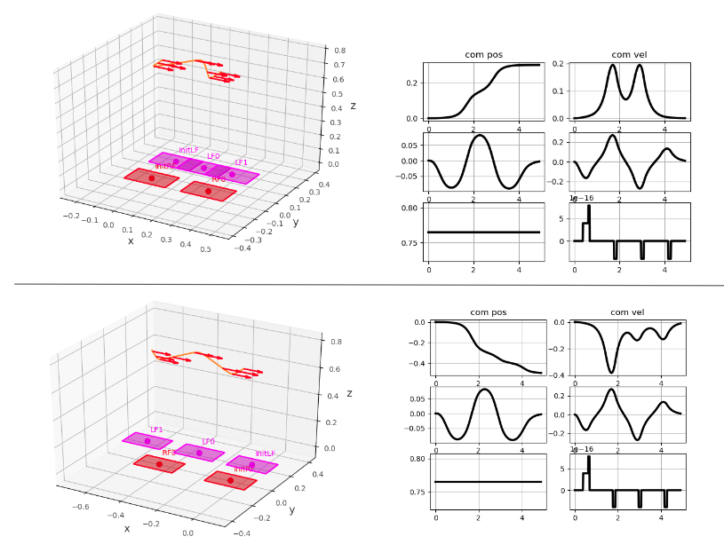
Quadruped locomotion with manipulation using RL and pretrained AMO controller.
Locomotion + manipulation task
Screwdriver task
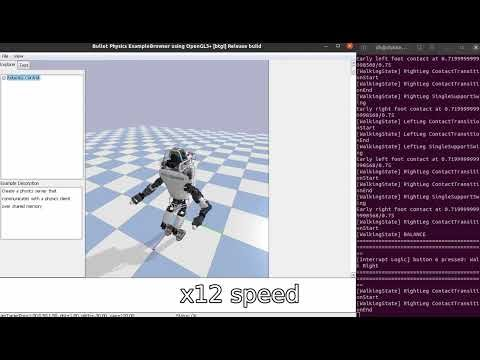
Humanoid stand-and-balance via QP optimization of joint accelerations and reaction forces.
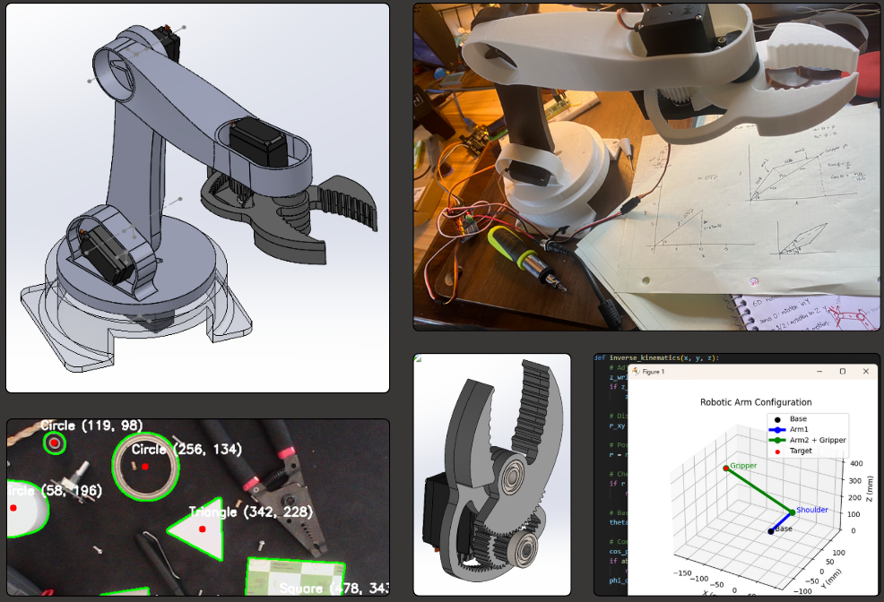
Divergent Component of Motion planner for bipedal walking trajectory generation.
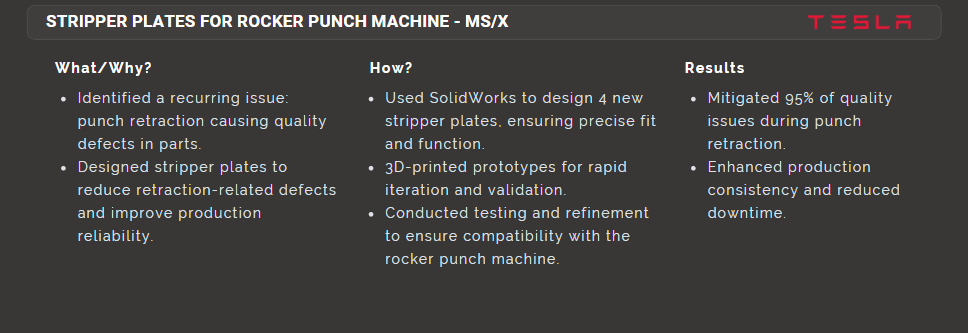
Forward, backward, and lateral walking controllers for humanoid locomotion.
Projects in collaboration with Tesla are not displayed due to a binding Non-Disclosure Agreement.
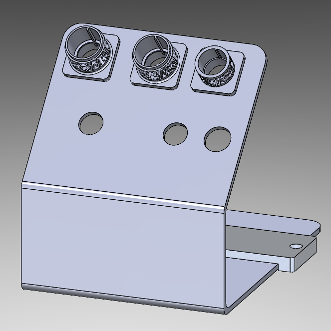
Custom fixture for precision electronics assembly.
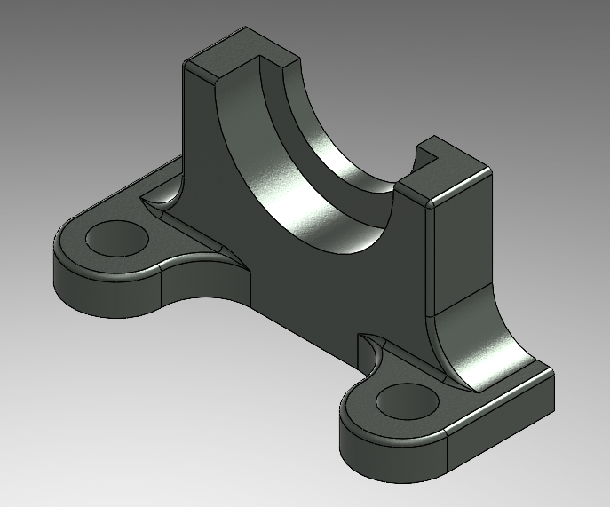
Precision-toleranced bearing mount for production equipment.
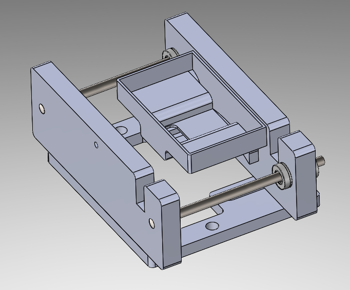
Temperature-controlled curing environment for composite parts.
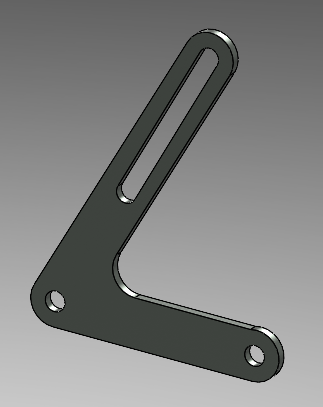
Structural mount optimized for load distribution.
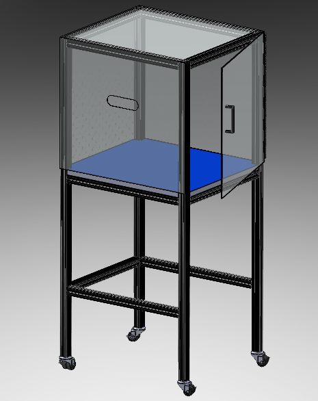
Industrial equipment enclosure meeting production safety standards.
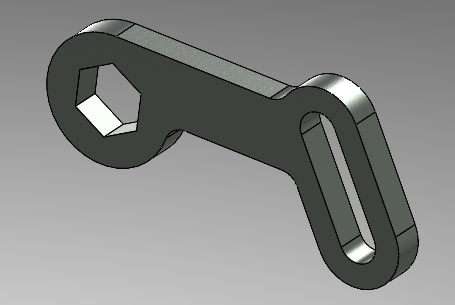
Custom tool for hard-to-reach fastener applications.
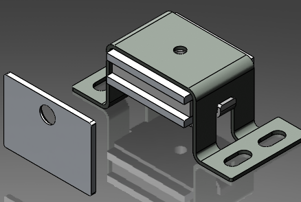
Quick-release magnetic mechanism for tool-less operation.
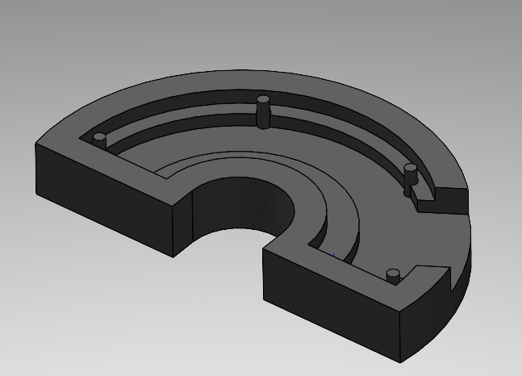
Adjustable fixture for PCB soldering and rework.
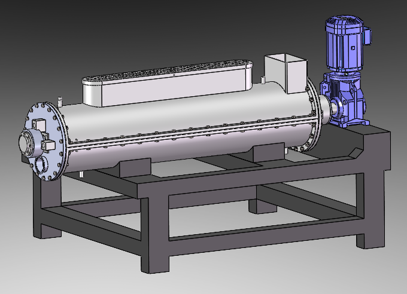
Ergonomic fixture for assembly-line production.
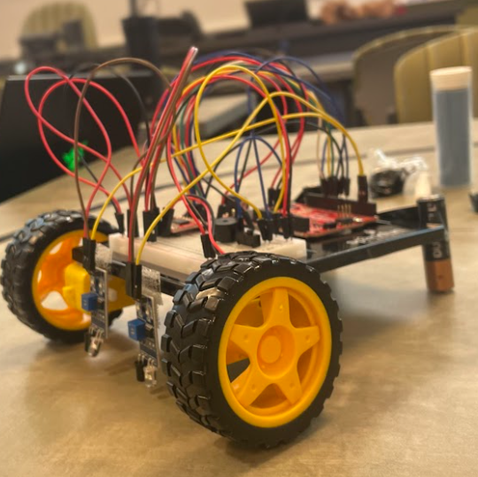
Autonomous IR-sensor robot with real-time path tracking.
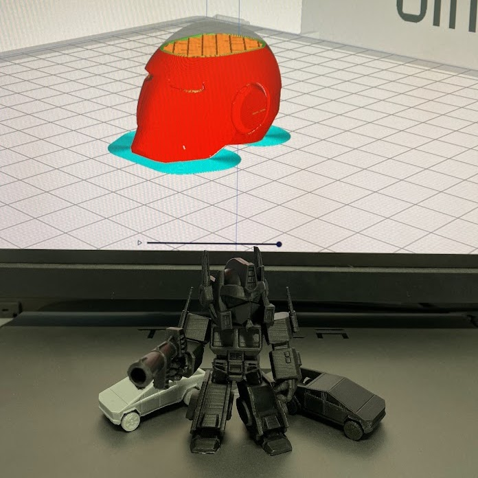
Cybertruck, Robot, Iron Man — CAD to 3D print.
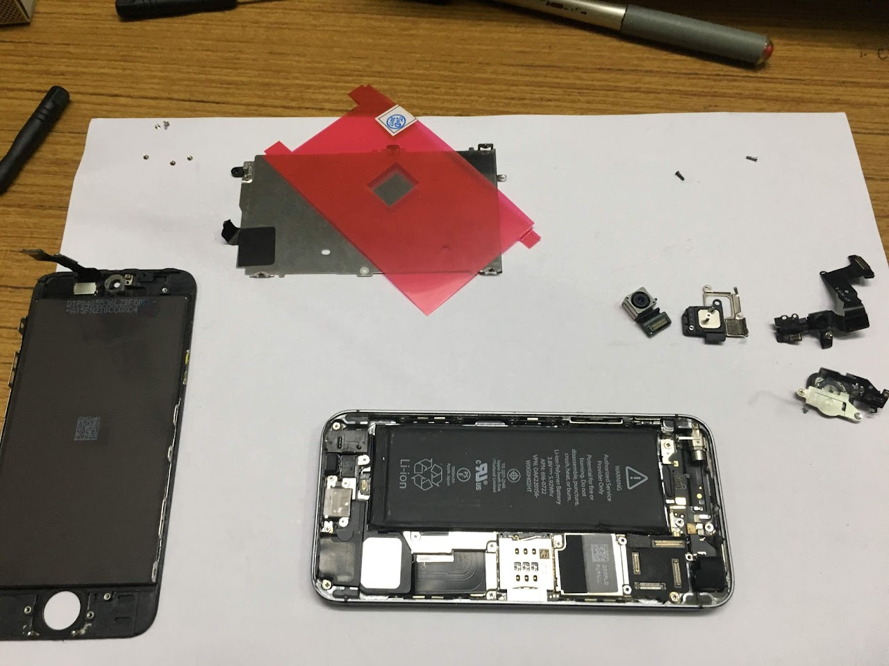
iPhone screen replacement & water-damaged laptop restore.